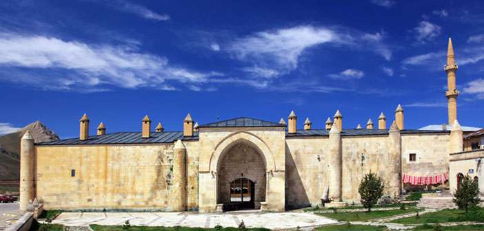

Kadın Hükümdar Mama Hatun Ve Külliyesi
Saltukoğulları Hükümdarı II.İzzettin Saltuk'un kızı olan Mama Hatun, 1191 yılında Saltukoğulları Beyliği'nin hükümdarı olmuştur. Eyyubiler'in Ahlat'ı kuşattıkları sırada çevre beyliklerine ait ordularla, Ahlat'a yardıma giden Saltuklu kuvvetlerinin başında bulunmaktaydı.
Hükümdarlığının ilk yıllarındaki durumu açıklık kazanmamış olmakla beraber, yeğenlerine karşı kararlı ve güçlü bir şekilde mücadele ederek 10 yıl hükümdarlığını sürdürmüştür.
Mama Hatun'un Mısır ve Suriye Meliki El Adil'den kendisine uygun soylu biriyle evlenmesi konusunda istekleri gerçekleşememiş, kadın hükümdar olmanın güçlükleri nedeniyle siyasi yaşamından ayrılmıştır.
Onun daha sonraki yıllarda nasıl yaşayıp, kaç yaşında öldüğü bilinmiyor. Ancak, hayatının son yıllarını Tercan'da geçirmiş olması ve buradaki türbede defnedilmesi ile Tercan, bir süre onun adıyla anılmıştır.
Bu soylu kadın hükümdar, Tercan'da Orta Çağ Türk mimarisinin en ilginç ve önemli eseri kervansaray, hamam, mescit ve kendi türbesinden oluşan büyük bir külliye inşa etmiştir.
Mama Hatun Türbesi
Saltuklu dönemine ait olan türbenin, 1192 yılında ölen Saltuklu Erzurum sahibesi Mama Hatun için yaptırılmıştır. Mimarı Ahlatlı Ebul-nema bin Mufaddalü'1-Ahval'dır. Türbe, dairesel planlı mimari özelliği ile Anadolu türbe mimarisi içindeki tek özgün eser olarak dikkat çeker.
Türbe kapısı üzerinde bulunan 5 kitabenin dördünde kurandan alınan ayet, Hazreti Muhammed ile 4 Halifenin adları, birinde ise mimarın adı yazılıdır. Ortadaki sivri külahlı kümbet, kimi ayrılıkları dışında, genel çizgileriyle Ahlat kümbetlerini andırmaktadır. Sarımsı kesme kireç taşından inşa edilen yapı, iki bölümden oluşur.
Ortadaki kümbet ve çevresinde 2.50 m kalınlığında dairesel duvarla çevrilmiştir. Çevre duvarı, içten 11 nişlidir. Bu nişlere Mama Hatun'un yakınlarının sandukaları yerleştirilmiştir. T.Erdoğan Şahin'e göre, Evliya Çelebi'nin gördüğü orijinal süslemeli mermer sandukanın yerine, günümüzde geç dönemlere ait sembolik bir sanduka bulunmaktadır.
Ortada yükselen kümbet iki katlıdır. Dıştan 8 dışbükey dilimler, köşelerde ince uzun sütuncelerle son bulmaktadır. 8 köşeli kaide üstünde yükselen kümbetin altında çapraz tonozlu mezar odası vardır. Üst kattaki mescide 7 basamakla çıkılmaktadır. Taçkapı mukarnas dolgu, geometrik motifler, çok dilimli rozetler ve dörtlü düğümlerle bezenmiştir.
Bordürlü dikdörtgen niş içindeki mazgal pencereler üzüm salkımı, palmet ve rumi süslemelidir.
Mama Hatun Kervansarayı, Hamamı ve Mescidi
Yapım kitabesi bulunmayan kervansarayın 13. yüzyılda yapıldığı tahmin edilmektedir. T.Erdoğan Şahin; A.Tevhid ve Ravendi'yi kaynak göstererek yapının 13. yüzyılda inşa edildiği görüşündedir.
Türbenin 30 m doğusundadır. Onarımlar nedeniyle özgün biçimini yitirmiştir. Yakın bir geçmişte çevre düzenlemesi ile birlikte restorasyonu yapılmıştır. Ana hatlarıyla Osmanlı kent hanları planındadır. Sarımsı renkte, düzgün kesme kireç taşı ile inşa edilmiştir. Çevre duvarı konik çatılı 16 silindirik yarım kuleyle desteklenmiştir.
Doğuda sivri kemerli taçkapı vardır. Girişin sağ ve solunda dikdörtgen planlı mekanlar sıralanır. Ortada üstü açık avlu, kuzey ve güneyinde yük hayvanları için uzun ahırlar ve bir dizi hücre bulunmaktadır. Planı ve mimari özellikleriyle 12. yüzyıl sonunda yapıldığı sanılmaktadır.
Kervansarayın kuzeydoğu köşesinde yer alan Mama Hatun Hamamı, kitabesi olmamakla birlikte kervansarayla aynı zamanda yapıldığı sanılmaktadır. Orijinal özelliklerini oldukça yitirmiştir.
Külliye içerisinde bulunan ve Evliya Çelebi'nin sözünü ettiği mescit, I.Dünya Savaşı'nda yıkılmış, daha sonra yerine bir cami inşa edilmiştir.

